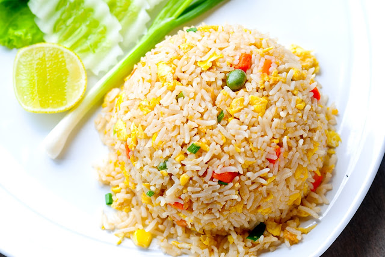

Nasi Goreng
Secara harfiah berarti “nasi goreng”, nasi goreng adalah hidangan Asia populer yang disesuaikan dengan selera orang Indonesia. Hidangan ini bisa Anda temukan hampir di setiap sudut Indonesia, namun tidak ada yang bisa mencukupinya, bahkan penduduk setempat. Rasanya yang kaya menyenangkan semua orang. Anda akan sangat menikmati hidangan ini.
Bahan-bahan yang perlu Anda siapkan adalah:
- Minyak sayur
- Satu batang daun bawang, diiris tipis
- 3 cabai merah
- 125 gr daging ayam, cincang halus
- Satu butir telur dikocok
- 2 sendok makan kecap manis
- 5 bawang merah
- 1 sendok makan garam
- 1 sendok makan merica
- 2 cabai merah besar
- 600 gram beras
- 5 siung bawang putih
Cara Membuat Nasi Goreng:
- 1. Haluskan bawang putih, bawang merah, dan cabai merah dalam cobek.
- 2. Orak-arik telur, goreng, sisihkan.
- 3. Tumis bumbu dengan minyak.
- 4. Masukkan daging ayam cincang, telur, dan daun bawang ke dalam bumbu tumis. Aduk rata, lalu tambahkan kecap asin, garam, dan merica. Biarkan rasanya menyatu dengan baik.
- 5. Terakhir masukkan nasi dan aduk rata.
- 6. Nasi goreng siap dihidangkan.